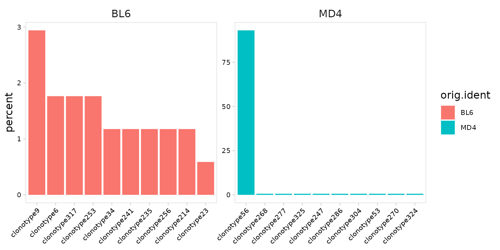
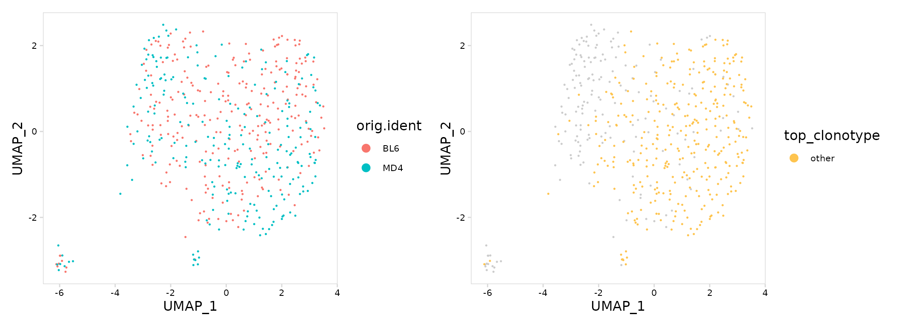
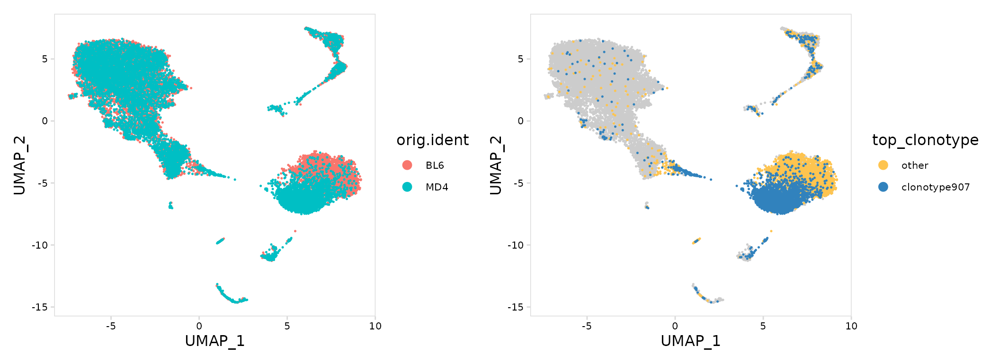
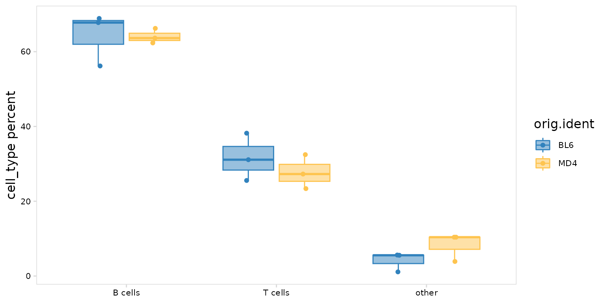
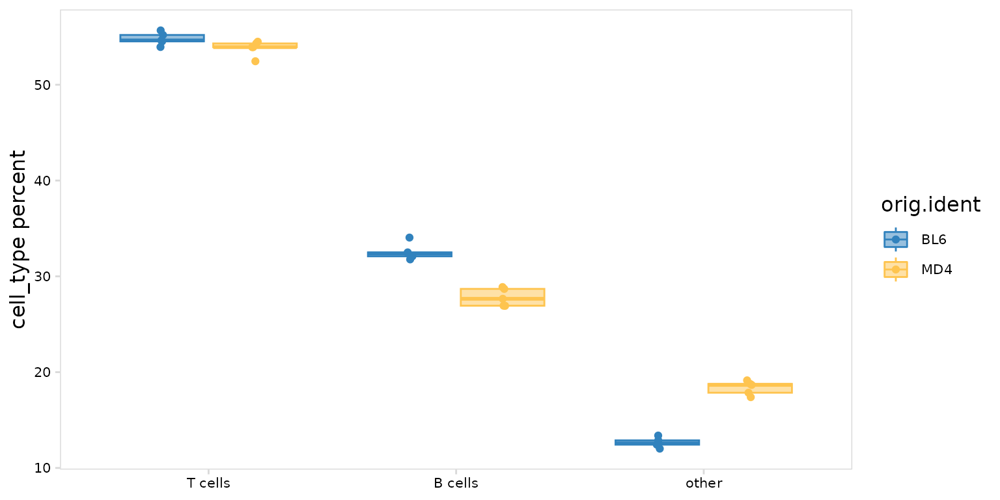

This vignette provides detailed examples for quantifying differences in clonal abundance. For the examples shown below, we use data for splenocytes from BL6 and MD4 mice collected using the 10X Genomics scRNA-seq platform. MD4 B cells are monoclonal and specifically bind hen egg lysozyme. A Seurat object along with the raw matrices can be downloaded here.
library(djvdj)
library(magrittr)
library(Seurat)
library(ggplot2)
library(dplyr)
download.file(
"https://djvdj-data.s3.us-west-2.amazonaws.com/splenocytes.zip",
"splenocytes.zip",
quiet = TRUE
)
unzip("splenocytes.zip", overwrite = FALSE)
# Load Seurat object
load("splenocytes/splen_so.rda")
# Add V(D)J data to object
vdj_dirs <- c(
BL6 = "splenocytes/BL6_BCR",
MD4 = "splenocytes/MD4_BCR"
)
so <- splen_so %>%
import_vdj(vdj_dirs, define_clonotypes = "cdr3_gene")Calculating clonal abundance
To quantify clonotype abundance and store the results in the object
meta.data, the calc_frequency() function can be used. This
will add columns showing the number of occurrences of each clonotype
(‘freq’), the percentage of cells sharing the clonotype (‘pct’), and a
label that can be used for plotting (‘grp’). By default these
calculations will be performed for all cells in the object.
so_vdj <- so %>%
calc_frequency(data_col = "clonotype_id")To calculate clonotype abundance separately for samples or clusters,
the cluster_col argument can be used. To do this just
specify the name of the column containing the sample or cluster IDs for
each cell.
so_vdj <- so %>%
calc_frequency(
data_col = "clonotype_id",
cluster_col = "sample"
)When cluster_col is specified, an additional meta.data
column (‘shared’) will be added indicating whether the clonotype is
shared between multiple clusters.
so_vdj@meta.data %>%
head(2)
#> orig.ident nCount_RNA nFeature_RNA RNA_snn_res.1
#> BL6_AAACCTGAGACCTTTG-1 BL6 273 208 0
#> BL6_AAACCTGAGGAATCGC-1 BL6 243 199 12
#> seurat_clusters cell_type sample
#> BL6_AAACCTGAGACCTTTG-1 0 B cells BL6-1
#> BL6_AAACCTGAGGAATCGC-1 12 B cells BL6-1
#> exact_subclonotype_id chains n_chains
#> BL6_AAACCTGAGACCTTTG-1 1 IGH;IGK 2
#> BL6_AAACCTGAGGAATCGC-1 1 IGL 1
#> cdr3
#> BL6_AAACCTGAGACCTTTG-1 CARHPAMDYW;CWQGTHFPRTF
#> BL6_AAACCTGAGGAATCGC-1 CALWYSTHYVF
#> cdr3_nt
#> BL6_AAACCTGAGACCTTTG-1 TGTGCCAGACATCCCGCTATGGACTACTGG;TGCTGGCAAGGTACACATTTTCCTCGGACGTTC
#> BL6_AAACCTGAGGAATCGC-1 TGTGCTCTATGGTACAGCACCCATTATGTTTTC
#> cdr3_length cdr3_nt_length v_gene
#> BL6_AAACCTGAGACCTTTG-1 10;11 30;33 IGHV2-6;IGKV1-135
#> BL6_AAACCTGAGGAATCGC-1 11 33 IGLV2
#> d_gene j_gene c_gene isotype reads
#> BL6_AAACCTGAGACCTTTG-1 None;None IGHJ4;IGKJ1 IGHM;IGKC IGHM 60;376
#> BL6_AAACCTGAGGAATCGC-1 None IGLJ2 IGLC2 None 360
#> umis productive full_length paired clonotype_id
#> BL6_AAACCTGAGACCTTTG-1 6;22 TRUE;TRUE TRUE;TRUE TRUE clonotype5467
#> BL6_AAACCTGAGGAATCGC-1 13 TRUE TRUE FALSE clonotype5730
#> clonotype_id_freq clonotype_id_pct
#> BL6_AAACCTGAGACCTTTG-1 1 0.1620746
#> BL6_AAACCTGAGGAATCGC-1 5 0.8103728
#> clonotype_id_shared clonotype_id_grp
#> BL6_AAACCTGAGACCTTTG-1 FALSE 1
#> BL6_AAACCTGAGGAATCGC-1 TRUE 2-6Plotting clonal abundance
djvdj includes the plot_clonal_abundance() function to
visualize differences in clonotype frequency between samples or
clusters. By default this will produce bargraphs. Plot colors can be
adjusted using the plot_colors argument.
so %>%
plot_clonal_abundance(
clonotype_col = "clonotype_id",
plot_colors = "#3182bd"
)
Abundance values can be calculated and plotted separately for each
sample or cluster using the cluster_col argument. The
panel_nrow and panel_scales arguments can be
used to add separate scales for each sample or to adjust the number of
rows used to arrange plots.
As expected we see that most MD4 B cells share the same clonotype, while BL6 cells have a diverse repertoire.
so %>%
plot_clonal_abundance(
clonotype_col = "clonotype_id",
cluster_col = "orig.ident",
panel_scales = "free"
)Rank-abundance plots can also be generated by setting the
method argument to ‘line’. Most djvdj plotting functions
return ggplot objects that can be further modified with ggplot2
functions. Here we log10-transform the y-axis using the
ggplot2::scale_y_log10() function.
so %>%
plot_clonal_abundance(
clonotype_col = "clonotype_id",
cluster_col = "orig.ident",
method = "line",
plot_colors = c(MD4 = "#fec44f", BL6 = "#3182bd")
) +
scale_y_log10()
UMAP projections
By default calc_frequency() will divide clonotypes into
groups based on abundance and add a column to the meta.data containing
these group labels. Clonotype abundance can be summarized on a UMAP
projection by plotting the added ‘grp’ column using the generic plotting
function plot_features()
# Create UMAP summarizing samples
mouse_gg <- so %>%
plot_features(
feature = "orig.ident",
size = 0.25
)
# Create UMAP summarizing clonotype abundance
abun_gg <- so %>%
calc_frequency(
data_col = "clonotype_id",
cluster_col = "sample"
) %>%
plot_features(
feature = "clonotype_id_grp",
size = 0.25
)
mouse_gg + abun_gg
Highly abundant clonotypes can also be specifically labeled on a UMAP
projection. To do this, add a new meta.data column with the desired
label using the mutate_vdj() function. This function works
in a similar manner as dplyr::mutate(), but will
specifically modify the object meta.data and allows to the user to parse
per-chain information for each cell.
top_gg <- so %>%
mutate_vdj(
top_clonotype = ifelse(clonotype_id == "clonotype907", clonotype_id, "other")
) %>%
plot_features(
feature = "top_clonotype",
size = 0.25,
plot_colors = c(other = "#fec44f", clonotype907 = "#3182bd")
)
mouse_gg + top_gg
Other frequency calculations
In addition to clonotype abundance, calc_frequency() can
be used to summarize the frequency of any cell label present in the
object. In this example we count the number of cells present for each
cell type in each sample.
so_vdj <- so %>%
calc_frequency(
data_col = "cell_type",
cluster_col = "sample"
)To plot the fraction of cells present for each cell type, we can use
the generic plotting function, plot_frequency(). This will
create stacked bargraphs summarizing each cell label present in the
data_col column. The color of each group can be specified
with the plot_colors argument.
so %>%
plot_frequency(
data_col = "cell_type",
cluster_col = "sample",
plot_colors = c("#3182bd", "#fec44f", "#31a354")
)To summarize the number cells present for each cell type, set the
units argument to ‘frequency’.
so %>%
plot_frequency(
data_col = "cell_type",
cluster_col = "sample",
units = "frequency",
stack = FALSE
)
Frequency plots can also be separated based on an additional grouping
variable such as treatment group (e.g. placebo vs drug) or disease
status (e.g. healthy vs disease). This will generate boxplots with each
point representing a label present in the cluster_col
column. In this example we have 5 BL6 and 5 MD4 samples, so there are 5
points shown for each boxplot.
so %>%
plot_frequency(
data_col = "cell_type",
cluster_col = "sample",
group_col = "orig.ident",
plot_colors = c(MD4 = "#fec44f", BL6 = "#3182bd")
)